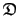
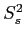

Next: Optimisation of the model-free Up: Values, gradients, and Hessians Previous: The Hessian Contents Index
In model-free analysis four different combinations of parameters can be optimised, each of which requires a different approach to the construction of the chi-squared value, gradient, and Hessian. These categories depend on whether the model-free parameter set , the diffusion tensor parameter set  , or both sets are simultaneously optimised. The addition of the local  parameter to the model-free set creates a fourth parameter combination.